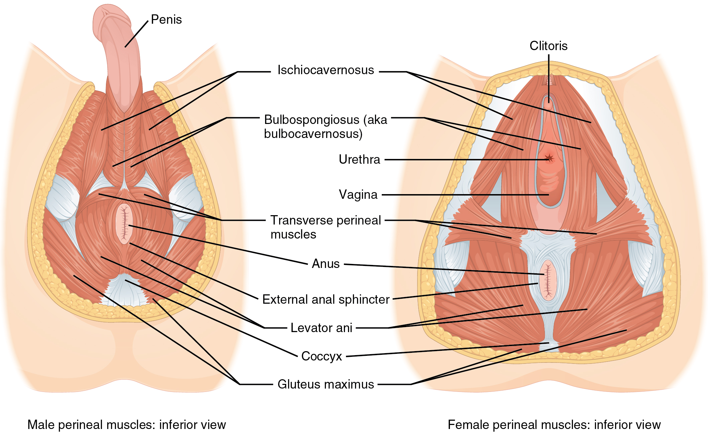

Bài tập sàn chậu cần đúng nhóm cơ và phù hợp triệu chứng. Gồng bụng, nín thở hoặc siết mông không thay thế được kiểm soát sàn chậu. Người có cơ căng và đau có thể cần học thả lỏng trước khi tăng sức mạnh.
Tình huống minh họa: Trong một lần tập, bạn chỉ cảm thấy bụng, mông và đùi cùng gồng. Thay vì tăng độ khó, hãy giảm lực, giữ nhịp thở và kiểm tra khả năng thả. Nếu vẫn không nhận biết được nhóm cơ hoặc có triệu chứng, hướng dẫn trực tiếp có thể hữu ích hơn tiếp tục tăng bộ đếm trong app.
Sàn chậu cần sức mạnh, thả lỏng và phối hợp
Sàn chậu là một nhóm cơ, không phải một nút bấm đơn lẻ. Nhóm cơ này góp phần nâng đỡ và kiểm soát hoạt động vùng chậu, phối hợp với hô hấp, thành bụng và các hoạt động thường ngày. Chức năng có thể bị ảnh hưởng bởi yếu cơ, căng quá mức, đau hoặc phối hợp chưa phù hợp; những tình trạng này không được xử lý giống nhau.

Vì vậy, “có triệu chứng thì siết nhiều hơn” là cách suy luận dễ sai. Với người cần tăng sức mạnh, chương trình phù hợp chú ý cả chất lượng co và giai đoạn nghỉ. Với người có đau hoặc căng, khả năng thả và cảm giác an toàn có thể cần được giải quyết trước. Một người cũng có thể có nhiều vấn đề cùng lúc.
Khi thử nhận biết cơ, hãy giữ hơi thở tự nhiên và tránh biến động tác thành gồng toàn thân. Đừng dùng việc ngắt dòng tiểu thường xuyên như bài tập. Nếu không chắc đang làm đúng, hoặc triệu chứng tăng sau tập, một đánh giá chuyên môn có thể tiết kiệm thời gian hơn việc tăng tiếp số lần trên app. Tiến bộ nên được đánh giá bằng chức năng và triệu chứng, không chỉ chuỗi ngày hoàn thành.
“Cơ PC”, cơ hành hang và cơ ngồi hang không phải tên của cùng một cơ
Những nội dung Kegel thường dùng tên “PC” cho cả vùng, nhưng cơ mu–cụt là một phần trong nhóm nâng hậu môn. Các cơ nông như cơ hành hang và cơ ngồi hang là những cấu trúc khác, liên quan hoạt động vùng đáy chậu. Có phối hợp giữa nhiều cơ không có nghĩa người dùng cần hoặc có thể cô lập từng cấu trúc hoàn toàn khi tự tập.
Vì vậy, tên giải phẫu giúp định hướng, không thay kiểm tra chức năng. Người có triệu chứng có thể cần đánh giá sức co, khả năng thả, đau và phối hợp. Bài tập không chỉ là làm một “động cơ” lớn hơn: cùng một mức siết có thể phù hợp với người này và làm người khác khó chịu hơn. Đây là lý do bản hướng dẫn nên mô tả mục đích và phản ứng cần theo dõi thay vì chỉ yêu cầu siết tối đa. 1 2 3 4 5
Hô hấp thay đổi nhịp tim bằng nhiều đường tương tác
Nhịp tim có thể thay đổi theo hô hấp, thường tăng khi hít vào và giảm khi thở ra trong điều kiện nghỉ. Hiện tượng này được gọi là biến thiên nhịp tim theo hô hấp. Nó liên quan sự phối hợp giữa điều khiển thần kinh, áp lực trong lồng ngực và các phản xạ tuần hoàn; không nên rút gọn thành “hít vào tắt dây phế vị, thở ra bật lại”.
Khi chủ động thở chậm, bạn đang thay đổi một yếu tố vốn ảnh hưởng chính phép đo HRV. Bởi vậy, một mức HRV tăng ngay trong buổi thực hành không đồng nghĩa đã giảm mọi dạng stress hoặc cải thiện thể lực. Tần số cộng hưởng cũng không nhất thiết giống nhau ở tất cả mọi người. Nhịp 5,5 lần/phút và hít 5,5 giây–thở 5,5 giây là hai mô tả cần phân biệt.
Thở chậm không có nghĩa thở càng sâu càng tốt. Hít quá mạnh hoặc liên tục có thể gây choáng và khó chịu. Mục tiêu thực hành thư giãn là hơi thở nhẹ, đủ thoải mái để duy trì, với quyền dừng ngay khi thấy không phù hợp. Người có triệu chứng tim phổi mới xuất hiện cần được đánh giá thay vì cố tự điều khiển bằng một bài thở. 6 7
Lactate, đau cơ muộn và phục hồi không phải cùng một việc
Sau một buổi tập, nhiều quá trình diễn ra đồng thời: điều chỉnh tuần hoàn, sử dụng và tái tạo nhiên liệu, đáp ứng mô cơ, ngủ và cảm giác mệt. Vì vậy, một biện pháp làm bạn thấy dễ chịu ngay không tự chứng minh đã tăng tốc mọi phần phục hồi. “Cảm thấy đỡ” và “sẵn sàng lặp lại buổi nặng” là hai kết quả khác nhau.
Lactate là một phần của chuyển hóa và có thể được dùng làm nhiên liệu; nó không phải chất độc nằm lại trong cơ nhiều ngày gây đau cơ muộn. Vận động nhẹ có thể thúc đẩy xử lý lactate trong một số bối cảnh, nhưng điều đó không đủ để kết luận sẽ giảm đau cơ ngày hôm sau hoặc sửa chữa mô nhanh hơn.
Phục hồi chủ động phù hợp khi mức vận động thật sự nhẹ và bạn thấy dễ chịu. Nếu biến ngày nghỉ thành một buổi cardio để tăng điểm app, bạn đã tạo thêm tải. Ngược lại, nghỉ hoàn toàn có thể phù hợp khi đang bệnh, rất mệt hoặc cần bảo vệ chấn thương. Chọn phương án dựa trên triệu chứng và kế hoạch chung, thay vì xem một bên luôn vượt trội. 8 9
Bảng đối chiếu để đọc đúng thông tin
| Vấn đề có thể gặp | Cần đánh giá | Điều dễ hiểu sai |
|---|---|---|
| Yếu hoặc tổn thương cơ | Khả năng co và chức năng | Chỉ đếm số lần siết |
| Căng hoặc đau | Khả năng thả và nguồn đau | Mặc định cần siết mạnh hơn |
| Phối hợp chưa phù hợp | Hô hấp, cơ khác, hoạt động gây triệu chứng | Coi gồng toàn thân là co đúng cơ |
| Rối loạn cương hoặc đau khi quan hệ | Nhiều nguyên nhân cùng có thể góp phần | Coi sàn chậu là nguyên nhân duy nhất |
Điểm cần giữ khi đọc kết quả nghiên cứu
Không có một lịch giữ–nghỉ áp dụng cho tất cả. Tránh tập bằng cách ngắt dòng tiểu thường xuyên hoặc cố siết khi đang đau. 1 2 3
Ứng dụng thực tế: làm gì và đánh giá bằng cách nào?
Bắt đầu ở tư thế thoải mái, co nhẹ như ngăn trung tiện, vẫn thở tự nhiên và nghỉ đến khi thả lỏng hoàn toàn. Chất lượng quan trọng hơn số lần. Nhờ chuyên viên hướng dẫn liều tập nếu có rò tiểu hoặc sau phẫu thuật.
- Mô tả thay đổi và mức khó chịu. Ghi thời điểm bắt đầu, hoàn cảnh và triệu chứng, không chỉ một con số hiệu suất.
- Xem cả sức khỏe và bối cảnh. Thuốc, đau, mệt, lo lắng và quan hệ có thể cùng góp phần; không cần chọn duy nhất tâm lý hay cơ thể.
- Trao đổi cách gần gũi thoải mái. Không biến cương, cực khoái hoặc thời gian thành nghĩa vụ; quyền dừng và lời từ chối luôn có giá trị.
- Tìm hỗ trợ đúng vấn đề. Khi kéo dài hoặc gây khổ sở, có thể cần đánh giá y khoa, tư vấn hoặc phục hồi phù hợp; tránh tự dùng hormone hoặc sản phẩm không rõ thành phần.
Khi nào nên tìm hỗ trợ?
Không có một lịch giữ–nghỉ áp dụng cho tất cả. Tránh tập bằng cách ngắt dòng tiểu thường xuyên hoặc cố siết khi đang đau.
Nếu đau, nặng vùng chậu hoặc tiểu khó xuất hiện hay tăng lên, dừng bài và được đánh giá kỹ thuật, trương lực cơ.
Nguồn tham khảo và phạm vi hỗ trợ
-
North Tees and Hartlepool NHS — Pelvic Floor Exercises for Men — Physiotherapy patient guidance. Hỗ trợ: Nhận biết, co và thả lỏng cơ sàn chậu nam.
-
Royal Berkshire NHS (2024) — Pelvic floor strengthening and relaxation exercises for men — Physiotherapy patient guidance. Hỗ trợ: Phối hợp tăng sức mạnh và thả lỏng; không kê bài siết cho tất cả.
-
NHS — Urinary incontinence: non-surgical treatment — Public health guidance. Hỗ trợ: Đánh giá sàn chậu và tập có giám sát cho rò tiểu.
-
Cambridge University Hospitals — Female pelvic floor muscle exercises — Physiotherapy patient guidance. Hỗ trợ: Cần thả lỏng đầy đủ giữa các lần co cơ.
-
Cohen et al. (2016) — The Role of Pelvic Floor Muscles in Male Sexual Dysfunction and Pelvic Pain — Clinical review. Hỗ trợ: Quan hệ giải phẫu, chức năng sàn chậu và tiếp cận sinh học–tâm lý–xã hội.
-
Zaccaro et al. (2018) — How Breath-Control Can Change Your Life: A Systematic Review on Psycho-Physiological Correlates of Slow Breathing — Systematic review. Hỗ trợ: Thở chậm, HRV và nghiên cứu không đồng nhất.
-
Draghici & Taylor (2016) — The physiological basis and measurement of heart rate variability in humans — Physiology review. Hỗ trợ: Cơ chế và giới hạn diễn giải HRV.
-
Van Hooren & Peake (2018) — Do We Need a Cool-Down After Exercise? — Narrative review. Hỗ trợ: Hạn chế bằng chứng về giảm đau cơ và phục hồi nhờ hạ nhiệt chủ động.
-
Kellmann et al. (2018) — Recovery and Performance in Sport: Consensus Statement — Consensus statement. Hỗ trợ: Phục hồi cần cá nhân hóa, gồm tải tập và áp lực cuộc sống.
Cập nhật nội dung và nguồn: 26/10/2026. Nội dung giáo dục; chưa có xác nhận duyệt bởi bác sĩ.